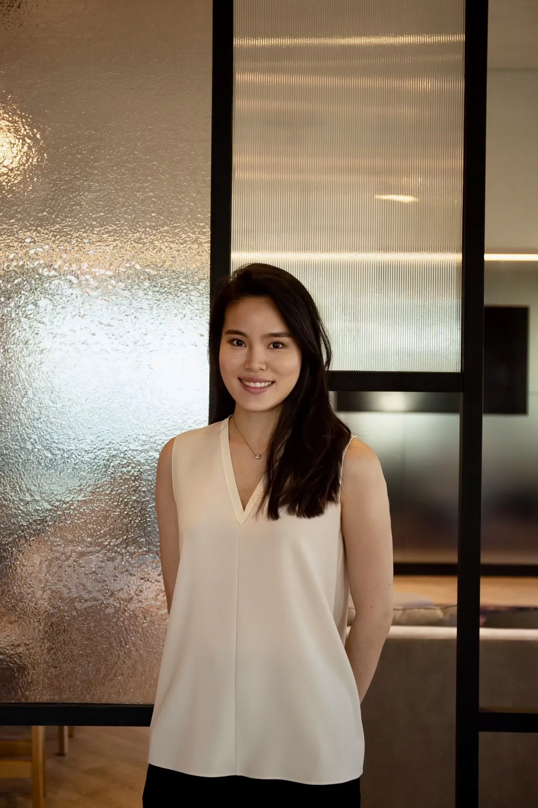

About Gin Lin

Gin Lin is a curator and researcher whose practice spans Taipei, Shanghai, and New York. She has held positions at TANK Shanghai, Fubon Art Museum, and Christie's New York, where she worked within the Post-War and Contemporary Art department. Her work moves between independent, institutional, and commercial contexts. Lin’s expertise in exhibition programming and collection development translates critical frameworks into strategies tailored to the specific needs of artists, institutions, and collectors.
Trained in both finance and contemporary art, Lin approaches the field from two directions at once: the scholarly and the market-facing. This unique dual fluency informs her work in artist positioning, strategic partnerships, and collection development, with a particular focus on contemporary Asian and diasporic practices.
Gin Lin 是一位專注於當代藝術的研究者與策展人，具備橫跨台北、上海與紐約的美術館、基金會、畫廊與拍賣行經驗。結合金融背景與跨文化經驗，她發展出兼具策略深度與研究力度的策展與收藏實踐。她曾任職於上海油罐艺术中心、富邦美術館籌備組、紐約佳士得戰後與當代藝術部研究員，而作為獨立策展人，她以跨文化視角為核心，致力於放大被忽略的聲音，並搭建多元開放的對話平台。
Work Experience
VIP Relations Representative
Researcher, Post-War and Contemporary Art
Program Coordinator
Gallery Associate
Marketing Specialist, Museum Preparation Office
VIP Relations Specialist
Program Coordinator
Client Management Officer
Education
Master of Arts, Contemporary Art
Bachelor of Science, Business Administration (Concentration in Finance)
CV available on request.